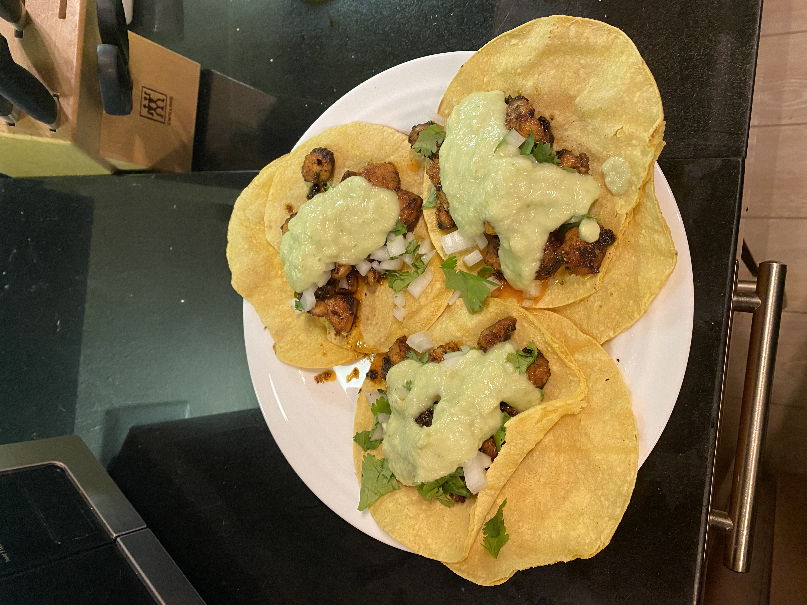
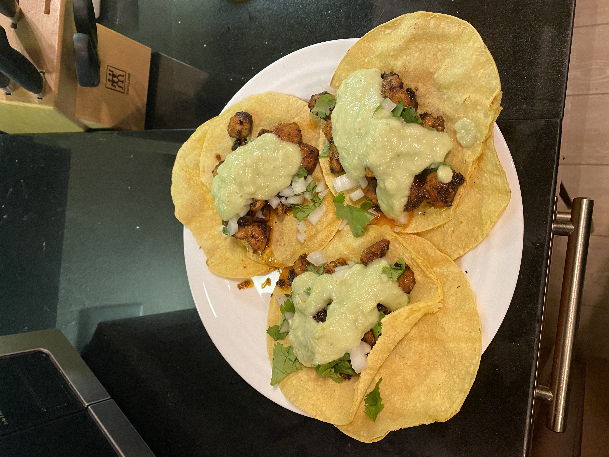

Tacos Recipe
 

Description
Tacos are a delicious treat to enjoy during any ocasion. Spicy and savory, these treats will be sure to be a hit wherever you bring them.
Tacos have quickly spread across the entire United States, as food-goers continue to love them!
Ingredients
- 1.25 pounds of Chicken thighs
- Small, corn tortillas
- Salsa
- Olive oil
- Salt
- Cajun seasoning
- Paprika
Steps
- Pat chicken thighs dry with paper towel.
- Cut them into small bite-size pieces.
- Season chicken with olive oil, cajun, salt, and paprika. Mix it all in with your hands to ensure the seasoning is evenly distributed throughout.
- Let chicken rest for 30 minutes.
- Turn stove on to medium high using a pan.
- Put chicken onto pan, letting them get a nice char on all sides. About 10 minutes.
- In a separate pan, toast taco tortillas.
- Remove everything, build your tacos, and enjoy!